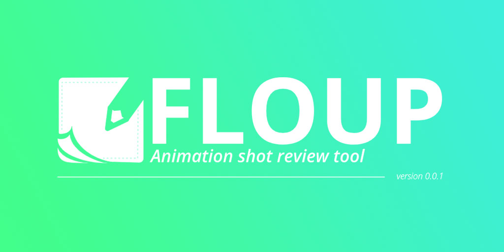

FLOUP
Floup is a animation review app to ease communication in an animation team. You can pretty much do anything basic as: - Importing videos (from menu or drag and drop) - Saving current scene to .floup file - Importing .floup project file (from menu or drag and drop) - Draw with pen tool with different colors and different brush sizes - Erase with eraser tool - Clear canvas to delete every strokes - Show & hide drawing's layer - Copy & paste drawing to another frame - Export project to video - Export specific frame to .png file - Play video in (almost) realtime (with loop feature) - Scroll through video frame by frame (through timeline or shortcuts) - Jump from keyframe to keyframe for faster navigation - Launch Floup through cmd line : floup_launcher.exe path/to/your/video/file/or/project.extension Vous pouvez retrouver cette application sur le Google Playstore !